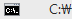

import datetime import errorConst def Time(): global s today = datetime.datetime.now() s = str(today) def Log(filename,mode,flag): global flagCheck global cnt global cnt2 cntstr=str(cnt) cntstr2=str(cnt2) flagCheck=0 f=open(filename+".txt",mode) Time() if cnt ==0: f.write(s+" "+" start\n") f.close() cnt = cnt + 1 else: # if flagCheck==int(flag): if int(flag) == errorConst.no_error: f.write(s+" "+status+" "+cntstr+"\n") f.close() cnt = cnt +1 elif int(flag) == errorConst.closeCount: f.write(s+" "+status+" "+cntstr2+"\n") f.close() cnt2 = cnt2 + 1 else: if status == errorConst.status_Open: f.write(s+" "+status+" "+cntstr+" fail\n") f.close() else: f.write(s+" "+status+" "+cntstr2+" fail\n") f.close() def runTest(): # run("C:\bat\SearchPlayer_Restart.bat") global status # if not exists ("1505979802016.png"): status = errorConst.status_Open # status = "Open" # click(Pattern("1506473093233.png").similar(0.80)) type(Pattern().similar(0.80),Key.UP) wait(1) type(Key.ENTER) if exists(Pattern().similar(0.97),200): Log("TestResult",'a',errorConst.no_error) elif exists(,5): Log("TestResult",'a',errorConst.no_error) else: Log("TestResult",'a',errorConst.error_1) run("C:\sikuli\gr1mailtest.bat") exit() def closeTest(): global status # status = "Close" status = errorConst.status_Close click(Pattern().similar(0.94).targetOffset(388,0)) wait(1) type(Key.ENTER) Log("TestResult",'a',errorConst.closeCount) try: cnt = 0 cnt2=1 Log("TestResult",'w',errorConst.no_error) while True: runTest() wait(3) runTest() wait(3) runTest() wait(10) closeTest() except FindFailed: Log("TestResult",'a',errorConst.error_1) run("C:\sikuli\gr1mailtest.bat")